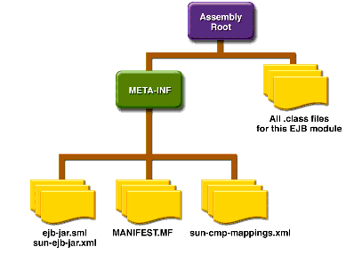

www.netbeans.org
Feedback
java.sun.com
|
Download
www.netbeans.org |
|
API
Feedback java.sun.com |
The Contents of an Enterprise Bean
To develop an enterprise bean, you must provide the following files:
- Deployment descriptor: An XML file that specifies information about the bean such as its persistence type and transaction attributes. The
deploytoolutility creates the deployment descriptor when you step through the New Enterprise Bean wizard.- Enterprise bean class: Implements the methods defined in the following interfaces.
- Interfaces: The remote and home interfaces are required for remote access. For local access, the local and local home interfaces are required. For access by web service clients, the web service endpoint interface is required. See the section Defining Client Access with Interfaces. (Please note that these interfaces are not used by message-driven beans.)
- Helper classes: Other classes needed by the enterprise bean class, such as exception and utility classes.
You package the files in the preceding list into an EJB JAR file, the module that stores the enterprise bean. An EJB JAR file is portable and can be used for different applications. To assemble a J2EE application, you package one or more modules--such as EJB JAR files--into an EAR file, the archive file that holds the application. When you deploy the EAR file that contains the bean's EJB JAR file, you also deploy the enterprise bean onto the Application Server. You can also deploy an EJB JAR that is not contained in an EAR file.

|
Download
www.netbeans.org |
|
API
Feedback java.sun.com |
All of the material in The J2EE(TM) 1.4 Tutorial is copyright-protected and may not be published in other works without express written permission from Sun Microsystems.